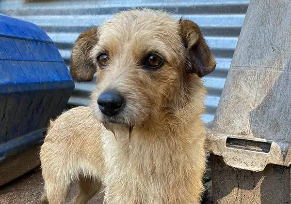
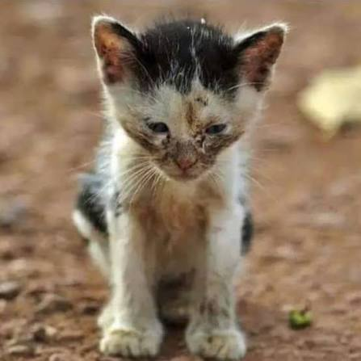
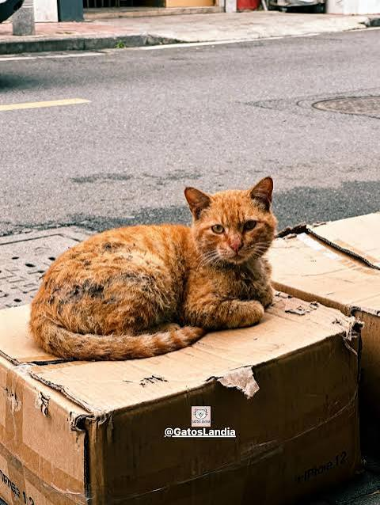

Toby
Edad: 2 años
Es un perro jugeton y cariñoso.
Adopta con responsabilidad
Conoce algunos de los animales que buscan un hogar responsable.

Edad: 2 años
Es un perro jugeton y cariñoso.

Edad: 1 año
Es tranquila y muy cariñosa.

Edad: 8 meses
Tranquila y le gustan las caricias.

Edad: 1 año
Es curioso, activo y jugeton